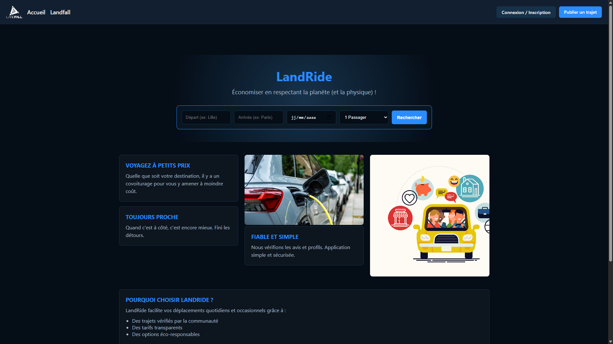

Conduire un projet & Collaborer au sein d'une équipe informatique — Prototype de plateforme web de covoiturage interne et de location de véhicules éco-responsables, développé en équipe de 4 avec charte graphique dark mode.
Voir le code
#050D17)
inspirée de l'identité visuelle gaming de Landfall Games. Navigation vers le covoiturage, la location de
véhicules et l'espace membre connecté.LandRide est un prototype fonctionnel de plateforme web de mobilité interne développé dans le cadre conjoint de la SAÉ 1.05 et 1.06. Le contexte applicatif est celui de l'entreprise fictive Landfall Games, un studio de jeux vidéo qui souhaite réduire l'empreinte carbone de ses collaborateurs en favorisant des modes de transport alternatifs à la voiture individuelle thermique : covoiturage entre salariés, location de vélos électriques, trottinettes et voitures électriques.
La plateforme intègre un système de gamification environnementale appelé « Eco-Points » : chaque trajet vert accompli rapporte des points échangeables contre des avantages internes, renforçant l'adhésion des utilisateurs aux modes de transport durables. Un espace membre complet (tableau de bord, messagerie, publication de trajet, gestion du profil) simule l'expérience complète d'un utilisateur connecté.
D'un point de vue technique, il s'agit d'une maquette statique entièrement réalisée en HTML5 et CSS3,
sans aucun langage serveur. La navigation est simulée par des liens HTML entre les 18 pages du site. La
charte graphique retenue est un dark mode gaming (fond #050D17) calqué sur l'identité
visuelle de Landfall Games. Des pages de confirmation (ex : confirmation_trajet.html)
restituent visiblement les retours utilisateur après soumission de formulaires, rendant le prototype
crédible en situation de présentation.
Ce projet est le plus ambitieux du Semestre 1 : quatre personnes (Romain Lefebvre en tant que chef de
projet, Paul Rucelle, Luca Magro, Baptiste Morin), 18 fichiers HTML, trois feuilles de style CSS, une
architecture en sous-dossiers (/compte/, /legal/, /css/,
/img/), et une présentation orale finale devant jury. Toutes les étapes — analyse du
besoin, conception graphique, développement, tests de navigation et soutenance — ont été gérées dans les
délais du semestre.
/compte/, /legal/,
/css/, /img/)base.css,
style.css)index.html — Accueil public, proposition de valeurrecherche.html — Recherche et résultats de trajetslocation.html — Location de véhicules écoa-propos.html — Présentation du servicecarte.html — Vue d'ensemble de toutes les pages/compte//legal//css/ & /img/base.css — Layout et variables CSS globalesstyle.css — Design, animations, composantscarte.css — Vue cartographiquedocument/LandRide.zip
document/
document/
LandRide est le projet du Semestre 1 dont je suis le plus fier, précisément parce qu'il mobilise simultanément le plus grand nombre de compétences distinctes — techniques, créatives et managériales. Assumer le rôle de chef de projet m'a confronté à des réalités invisibles quand on travaille seul : comment déléguer sans perdre la cohérence globale, comment arbitrer entre des approches différentes quand quatre personnes ont chacune leur vision du même bouton ou de la même couleur.
Sur le plan technique, concevoir une charte graphique dark mode de A à Z a été un exercice à la fois
exigeant et passionnant. Choisir une palette harmonieuse sur fond sombre, sélectionner une typographie
lisible, standardiser des composants réutilisables dans base.css — tout cela donne au
développement front-end une dimension quasi artistique que je n'avais pas anticipée. Le fait d'avoir
imposé très tôt des variables CSS globales a considérablement facilité l'intégration des pages
développées séparément par les membres de l'équipe.
La leçon la plus durable de ce projet est que la qualité d'un livrable collectif se joue dès la phase de cadrage : définir clairement les conventions de code, les règles de nommage, les responsabilités et les livrables attendus de chacun évite des heures de correction a posteriori. C'est un principe que j'applique désormais systématiquement, y compris dans mes projets personnels.